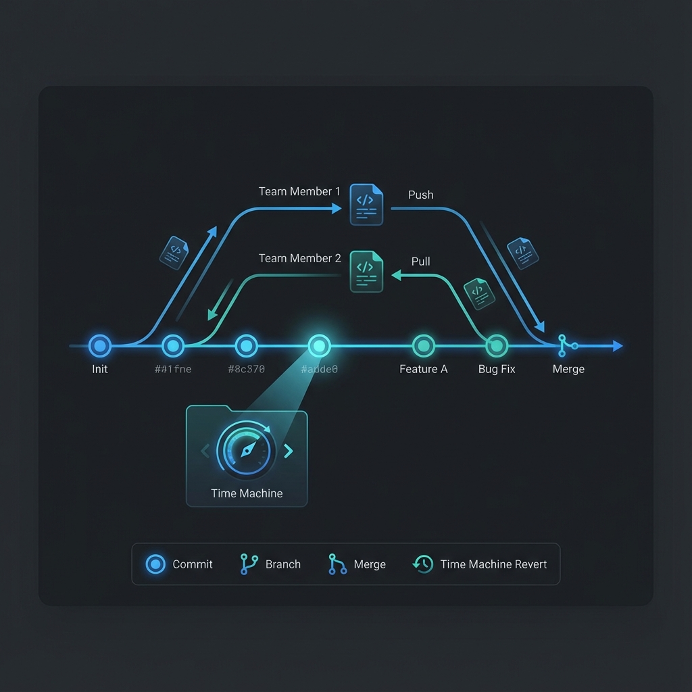

Git 설치와 기본 명령어 🌿
Git은 단순한 백업 도구가 아니라, 개발자의 '타임머신'이자 '협업의 핵심'입니다. 왜 Git을 써야 하는지, 그리고 어떻게 사용하는지 알아봅니다.

1. Git, 왜 사용해야 할까요? 🤔
처음 코딩을 시작하면 "그냥 파일을 구글 드라이브나 USB에 복사해 두면 안 될까?"라는 생각이 들 수 있습니다. 하지만 프로젝트가 커지면 다음과 같은 문제에 맞닥뜨리게 됩니다.
① "진짜_최종_마지막_v2.zip"의 늪 (버전 관리)
코드를 수정하다가 어제 짰던 코드가 더 좋았다는 것을 깨달았을 때, Git이 없다면 이전으로 돌아가기 매우 어렵습니다. Git은 모든 수정 이력을 커밋(Commit)이라는 단위로 기록하여, 언제든지 과거의 특정 시점으로 안전하게 돌아갈 수 있게 해줍니다.
② "내가 고친 게 영희 코드를 망쳤어" (협업)
여러 사람이 하나의 파일을 동시에 수정할 때, 서로의 코드를 덮어쓰지 않고 안전하게 합치는 작업은 매우 어렵습니다. Git은 각자의 변경 사항을 자동으로 비교하고 합쳐주는(Merge) 똑똑한 중재자 역할을 합니다.
③ "망해도 괜찮아" (안전한 실험)
새로운 기능을 추가해보고 싶은데 기존 코드가 망가질까 봐 걱정되나요? Git의 브랜치(Branch) 기능을 쓰면, 원본 코드는 그대로 둔 채 복사본 환경에서 마음껏 실험해볼 수 있습니다. 결과가 좋으면 합치고, 아니면 그냥 버리면 그만입니다.
2. 설치 및 초기 설정
설치 (Windows)
- Git for Windows 다운로드
- 설치 시 기본 옵션을 유지하되, 터미널 사용을 위해
Git Bash가 포함되도록 합니다. - 설치 후 터미널에서
git --version으로 정상 작동을 확인합니다.
사용자 정보 등록
Git을 처음 설치했다면, 내가 누구인지(커밋 작성자) 알려줘야 합니다.
원격 저장소 상호작용 (GitHub 연동)
로컬 프로젝트를 GitHub과 같은 원격 저장소에 처음 연결할 때 사용합니다.
# 1. 새 로컬 저장소 초기화 (이미 되어있다면 생략)
git init
# 2. 원격 저장소 연결 (origin이라는 이름으로 저장소 주소 등록)
git remote add origin https://github.com/사용자명/저장소명.git
# 3. 브랜치 이름을 main으로 변경 (기본값이 master인 경우)
git branch -M main
# 4. 첫 푸시 (원격의 main 브랜치와 연결하며 업로드)
git push -u origin main
3. 핵심 작업 흐름 (Workflow)
가장 자주 사용하게 될 4가지 필수 명령어입니다.
git status: 현재 내가 어떤 파일을 수정했는지 상태를 확인합니다.git add .: 수정된 파일들을 "이제 기록할 준비가 됐어!"라고 장바구니에 담습니다. (Staging)git commit -m "메시지": 장바구니에 담긴 내용을 영구적인 기록으로 남깁니다. (메모 작성 필수)git push: 내 컴퓨터에 기록된 내용을 서버(GitHub 등)로 올립니다.
4. 자주 쓰이는 유용한 명령어
| 명령어 | 용도 | 비유 |
|---|---|---|
git clone <url> |
원격에 있는 프로젝트를 내 컴퓨터로 통째로 가져오기 | 프로젝트 복사해오기 |
git pull |
서버의 최신 코드를 내 컴퓨터로 내려받기 | 업데이트 체크 및 적용 |
git restore <file> |
아직 커밋하지 않은 수정을 취소하고 원래대로 되돌리기 | 방금 한 실수 취소하기 |
git revert HEAD |
이미 완료된 최근 커밋을 취소하는 새로운 커밋 만들기 | 과거의 잘못을 바로잡기 |
💡 팁: .gitignore 활용하기
파이썬의 가상환경(.venv)이나 API 키가 담긴 .env 파일은 Git에 올리면 안 됩니다. 이런 파일들을 무시하도록 설정하는 .gitignore 파일을 프로젝트 최상위에 꼭 만들어주세요.
⚠️ 주의: 비밀번호나 API 키가 포함된 코드를 Push하면 전 세계 사람들이 볼 수 있으니 항상 조심하세요!